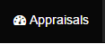
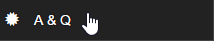
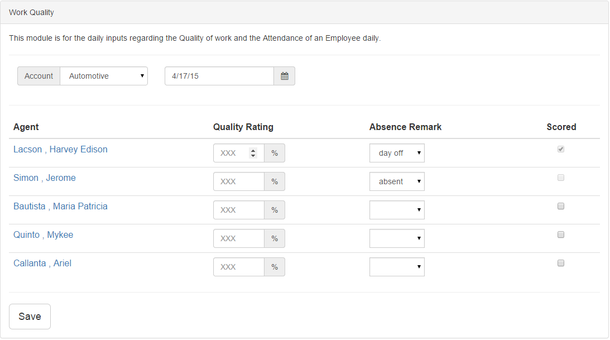
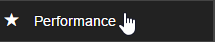
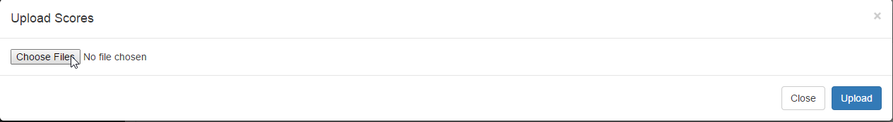
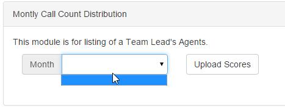
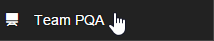
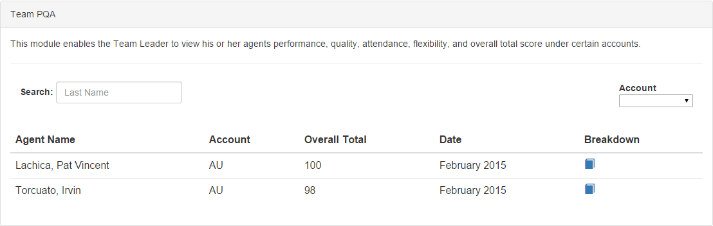
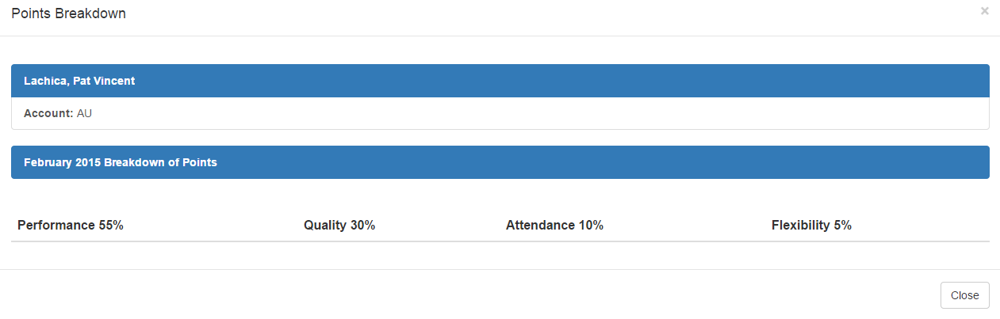

Appraisals
For you to appraise an employee click appraisals button on the top right.

and click A & Q, A for Attendance and Q for the Quality work of an employee
Attendance and Quality
This module is for daily inputs regarding the Quality of work and the attendance of an employee daily. 
after clicking A & Q this will you on your screen

- You can select an account to appraise employee, agent on that specific account
- You can only rate the quality of work form 1-100
- To mark the absent you can select:
- present
- absent
- day off
- You can select the check button in scored if you already scored the employee
Performance
This module is for listing of teamleads agents.

- Uploading facility that uploads the daily scores of an agent. This will only accept a CSV file.

- To view the Monthly call counts distrubution you may select specific month to view the call counts of every months uploaded.

Team PQA
This module enables the team leader to view his/her agents performance, quality, attendance, flexibility, and overall total score under certain accounts.

- Team Leader oversee all PQA of his/her agents agents.
- Use search function to search a specific agents.
- Use the dropdown menu on the right side to select an account to list all agents on that accounts.

- To view the breakdown or summarized PQA of a specific agent click the blue button of the breakdown column and it will diplay..
